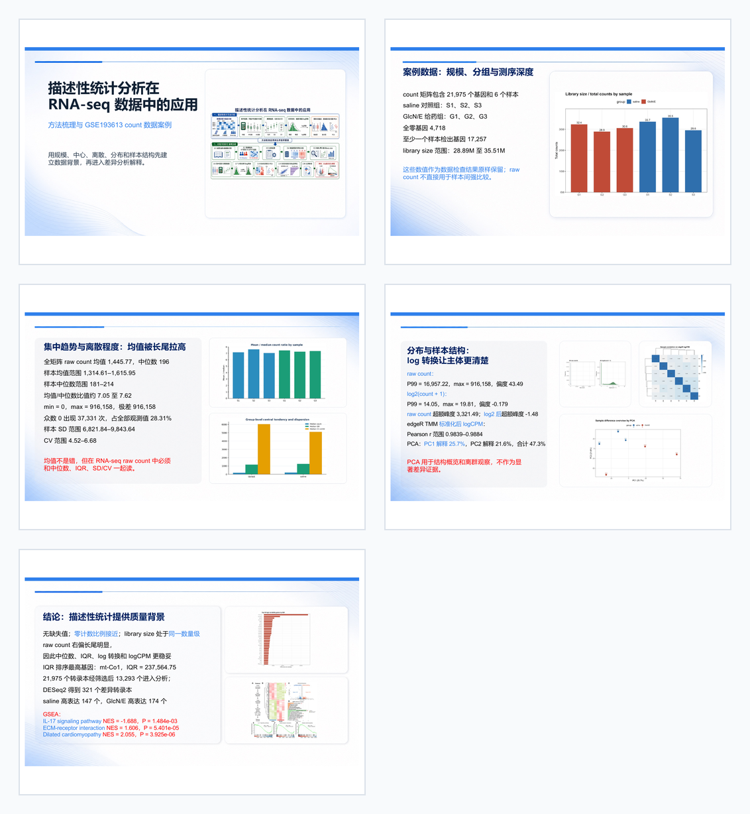
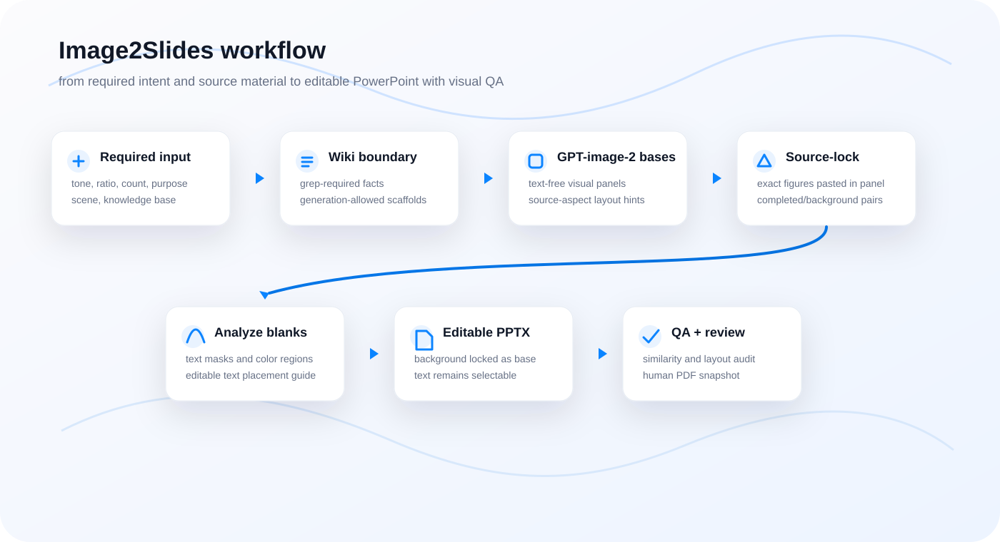
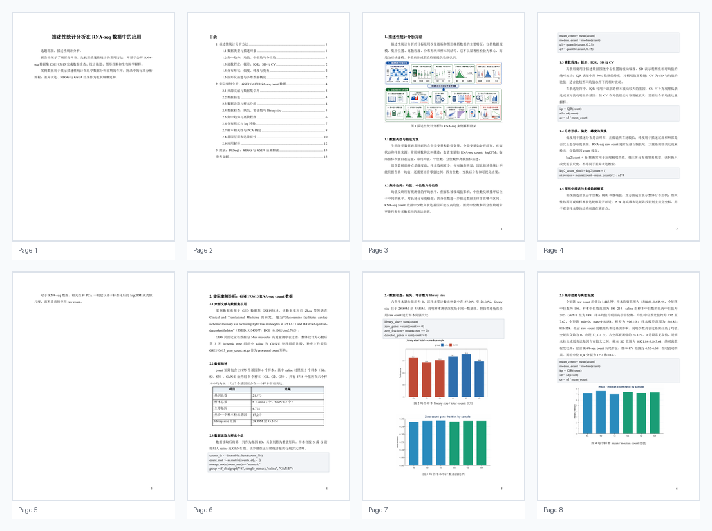

Slash-command surface
The plugin starts from required intent fields, writes the project wiki, and keeps each stage inspectable on disk.
Image-generated slide bases become source-grounded, editable PowerPoint decks. The workflow combines GPT-image-2 visuals, wiki planning, content boundaries, source-locked figures, and rendered-slide QA.

The plugin starts from required intent fields, writes the project wiki, and keeps each stage inspectable on disk.
Codex native image generation produces completed references and text-free backgrounds; source-locked figures are inserted later without redrawing results.
Backgrounds stay non-selectable, text remains editable, and the final reviewed PDF becomes the visual snapshot.
Workflow
The v1 pipeline keeps the two GPT-image-2 batches explicit: completed references first, text-free background edits second, then deterministic PowerPoint assembly and boundary-aware QA.

Commands
Agents make creative and factual decisions; the helper CLI keeps the file layout, composition, PPTX build, and QA repeatable.
/image2slides
style: white classroom report
ratio: 16:9
count: 5
purpose: presentation
scene: classroom
knowledge_base: ./howitworks
image2slides init --project decks/my-deck --spec spec.json
image2slides queue --project decks/my-deck
# after Codex native image_gen saves completed refs:
image2slides register-completed --project decks/my-deck
# after GPT-image-2 edits text-free backgrounds:
image2slides register-background --project decks/my-deck
image2slides compose-source-locked --project decks/my-deck
image2slides audit-layout --project decks/my-deck --strict
image2slides analyze --project decks/my-deck
image2slides build-pptx --project decks/my-deck
image2slides qa --project decks/my-deck --strict
# optional stricter blank-zone gate:
image2slides qa --project decks/my-deck --boundary-strictWiki
The wiki is the plugin's working memory: intent, hierarchy, source boundaries, source records, and slide plans.
wiki/00_project_brief.md captures the required inputs and keeps them out of visible slide text.
wiki/02_content_boundary.md states which claims must be sourced and which parts may be generated.
wiki/03_source_registry.yml records documents, figures, extracted text, citations, and immutable data layers.
wiki/04_slide_plan.json defines titles, editable text, speaker notes, source layers, panel boxes, margins, and non-editable source-panel boundaries.
Content boundary
Facts, data values, citations, dates, paper names, quotes, screenshots, charts, and source figures. These must come from user material, web/search, or registered sources.
Visual rhythm, teaching transitions, metaphors, non-factual phrasing, layout pacing, background motifs, and presentation polish.
Input and output
Base style/tone, aspect ratio, slide count, purpose, scene, and knowledge base. The plugin does not treat these as optional.
Prompt queues, native image bases, source-locked completed/background images, analysis JSON, and QA reports.
Editable pptx/image2slides.pptx and a human-reviewed pptx/image2slides.pdf visual snapshot.
Howitworks example
The example uses the user's converted input PDF, extracted knowledge, GPT-image-2 bases, and reviewed PowerPoint/PDF result.

The input side is the converted howitworks.pdf, with extracted text and figures kept in the example folder.
The output side is the accepted PowerPoint export. This PDF is the canonical visual artifact for avoiding conversion drift.
Open reviewed PDF